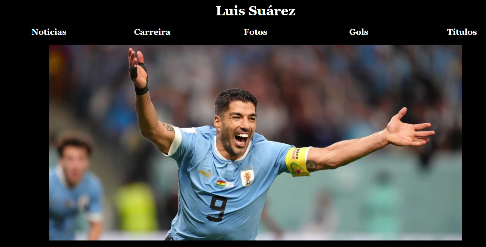

Página Web Luis Suárez
Esta página web apresenta informações sobre Luis Suárez e sua atuação de destaque no futebol, com foco em sua participação no Inter Miami na MLS. Inclui notícias recentes e uma imagem em destaque que ressalta seu desempenho na partida contra o Chicago Fire. Luis Suárez é um dos jogadores de futebol mais icônicos da última década, e esta página destaca suas conquistas mais recentes e seu impacto na liga americana.
- 🛠️ Tecnologias utilizadas: HTML, CSS
- Data de criação: Setembro de 2024
- Status: Concluído